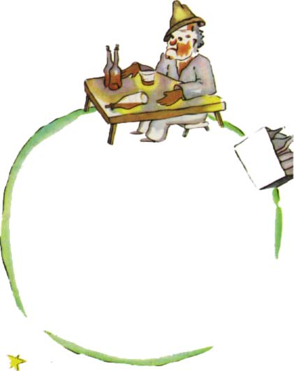

"Co tady dìlá¹?" øekl pijanovi, který sedìl mlèky pøed øadou prázdných a øadou plných lahví.
"Piji," odpovìdìl pochmurnì pijan.
"A proè pije¹?" zeptal se malý princ.
"Abych zapomnìl," øekl pijan.
"Naè abys zapomnìl?" vyzvídal malý princ a u¾u¾ ho zaèínal litovat.
"Abych zapomnìl, ¾e se stydím," pøiznal se pijan a sklonil hlavu.
"A zaè se stydí¹?" vyptával se dále malý princ, proto¾e by mu rád pomohl.
"Stydím se, ¾e piji!" dodal pijan a nadobro se odmlèel.
A malý princ zmaten ode¹el.
Dospìlí jsou rozhodnì moc a moc zvlá¹tní, øíkal si v duchu cestou.